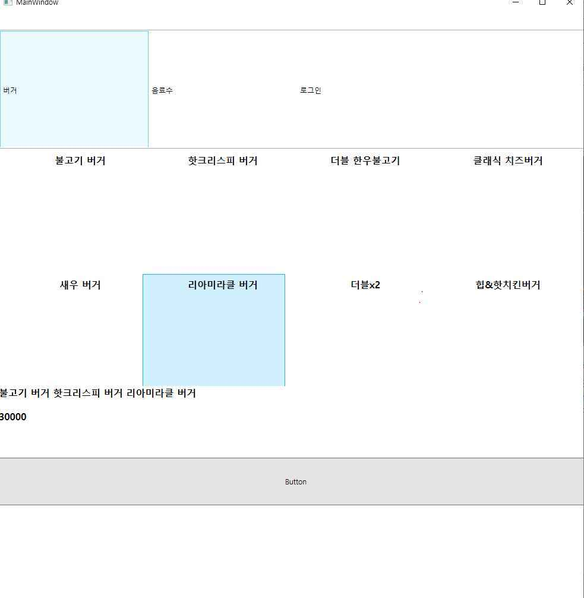

학습용 개인 프로젝트
Kiosk
- 기간
- 2021.09–2022.01
- 역할
- 개인 개발

소개
2021년 9월부터 2022년 1월까지 주문 키오스크의 상품 선택부터 주문 전송까지 만들어 본 학습용 개인 프로젝트입니다.
C# WPF로 주문 화면을, Node.js와 Express, MSSQL로 서버를 만들었습니다. 상품 목록과 장바구니, 관리자용 상품 관리를 구현하고, 주문 금액은 서버로 보내 검증하게 했습니다. 회사에서 개발한 병원 키오스크 CMS와는 별개의 프로젝트입니다.
주요 기능
- 주문 화면
- 상품 목록에서 고른 상품을 장바구니에 담고 주문 금액을 서버로 보냅니다. 주문 화면과 상품 선택 화면
- 서버 검증과 관리자 기능
- 서버가 받은 주문 금액을 검증하고, 관리자는 상품을 등록하고 고치고 지울 수 있습니다.
트러블슈팅
통신 문제 해결
해결SQL Server의 TCP/IP 설정과 HTTP 요청의 JSON Content-Type 불일치를 점검해 클라이언트와 서버 사이의 통신 문제를 해결했습니다.
화면
